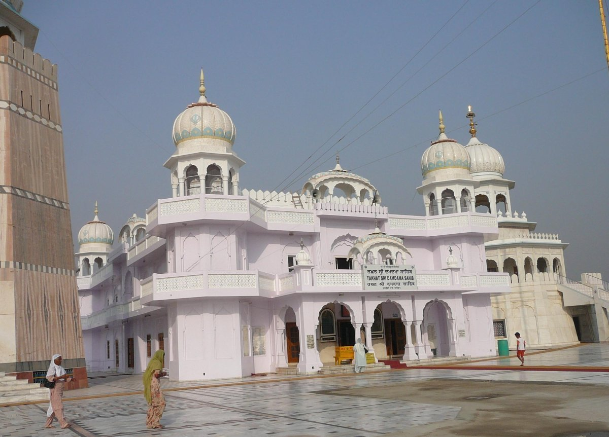
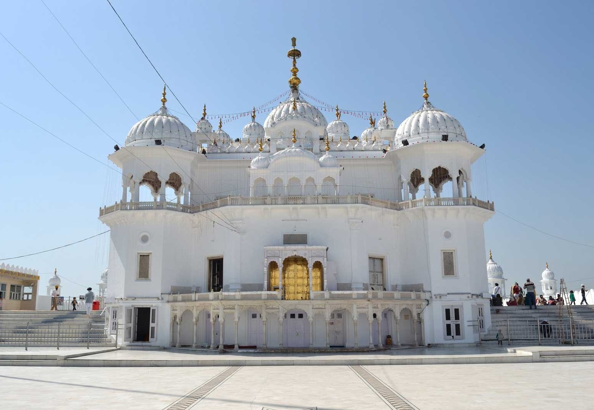
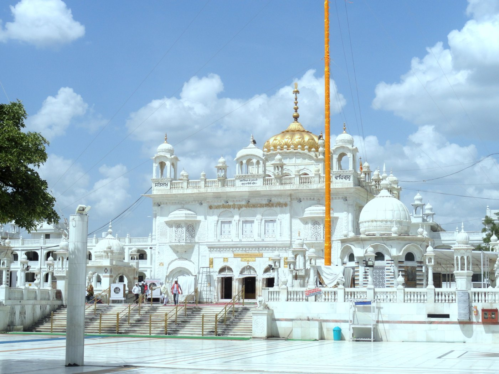
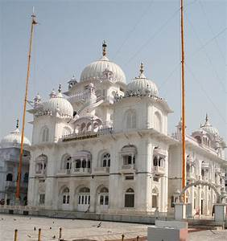

Akal Takhat Sahib literally means Eternal Throne. It is also part of the Golden Temple complex in Amritsar. Its foundation was laid by Guru Hargobind Ji, the sixth Sikh Guru. The Akal Takhat is situated opposite to Harmandir Sahib and are connected by a passage. The building of the Akal Takht opposite the Golden Temple has a special meaning. While the Golden Temple stands for spiritual guidance the Akal Takhat symbolizes the dispensing of justice and temporal activity. In earlier days all Sikh warriors sought blessings here before going to battle fields. During the 18th century while Sikhs were fighting a guerrilla war in the forests they used to gather at the Akal Takat on special occasions such as Vaisakhi . Here the community used to have general meetings and approve resolutions. The Akal Takht is the oldest of the Five Takhatscle.
Takht Sri Damdama Sahib

Damdama Sahib is situated in the village of Talwandi Sabo near Bhatinda. This is where Guru Gobind Singh stayed for nearly a year and compiled the final edition of the Guru Granth Sahib known as the Damdama Sahib Bir in 1705.
Takht Sri Keshgarh Sahib

Takht Sri Keshgarh Sahib is situated at Anandpur SahibIt is the birthplace of the Khalsa. The order of the Khalsa was founded here by Guru Gobind Singh ji in 1699. Some of the weapons of Guru Gobind Singh ji are displayed here.
Takht Sri Hazur Sahib

Nand is one of the historical places in region Marathwada of Maharastra State. It is situated on the north bank of Godavari River, in the southeastern part of Maharashtra, bordering Telangana . It is famous for Sikh Gurudwaras. Nanded is a town of great antiquity.In 1708, Guru Gobind Singh Ji the tenth spiritual leader of the Sikhs came over to Nanded, His permanent abode. It was He who preached amongst the Sikhs that there need Nanded not be any Human Guru for them after Him and they should take Guru Granth Sahib Ji as their liHimself is Vaheguru(Akaal Purakh,God) A Gurudwara has also been constructed there. It is known as Shri Huzur Abchalnagar Sachkhand Gurudwara. Guru and there will be no difference between Him and Guru Granth Sahib Ji . A monument has been gh Ji left their body but He is always everpresent.ving constructed at the place where Guru Gobind Singh.
Takht Sri Patna Sahib

Patna Sahib is situated in Patna the capital of Bihar. It was here that Guru Gobind Singh was born in 1666 and spent his early years before moving to Anandpur. Besides being the birthplace of Guru Gobind Singh, Patna was also honoured by visits from Guru Nanak as. well as Guru Tegh Bahadur